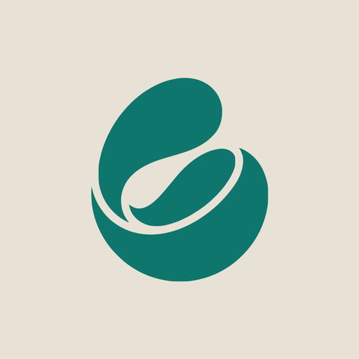

Ya en la App Store, para iPhone
Nomad: guía de viajes
¿Pagar sin ver
qué te llevas?
Antes de pagar,
ya ves tu viaje.
Tus días,
listos para escribirse.
La guía de tu paseo,
ya preparándose.
Y la de tu museo,
obra por obra.
NOMAD AI ya
conoce tu ciudad.
Si te convence,
un solo pago.

Nomad: guía de viajes

Pronto en Android™
Secuencias acortadas. Apple, el logotipo de Apple e iPhone son marcas comerciales de Apple Inc., registradas en EE. UU. y en otros países. App Store es una marca de servicio de Apple Inc. Android es una marca comercial de Google LLC.
Enlace en el perfil